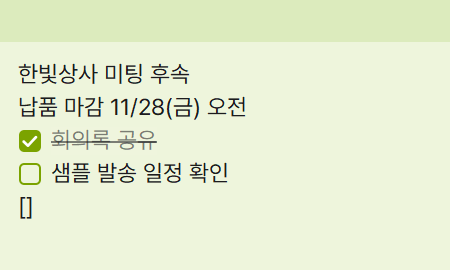
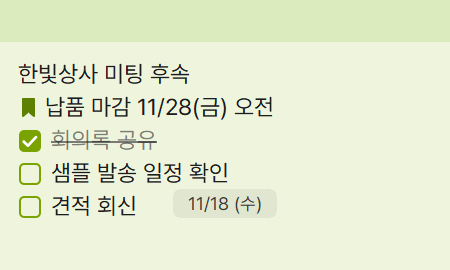
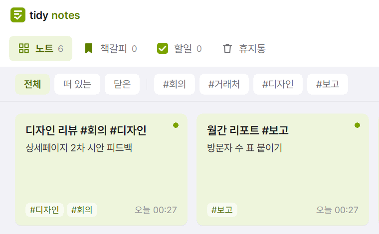
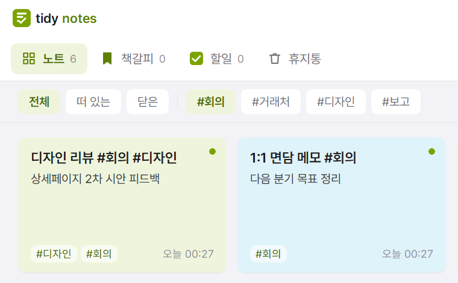

표·이미지 붙여넣기
엑셀·웹의 표와 캡처 이미지를 그대로 붙이고, 크게 보기로 확인합니다.
Windows 데스크탑 메모
툴바도, 폴더도 없이 바로 씁니다. 필요한 기능은 /와 우클릭으로 그때만 꺼냅니다.
할일은 줄 앞 기호 하나로 만들고, 늘 봐야 할 줄은 책갈피로 걸어 바탕화면 보드에 띄워 둡니다.




폴더를 만들 필요가 없습니다. 본문에 적은 태그가 그대로 분류가 됩니다.



엑셀·웹의 표와 캡처 이미지를 그대로 붙이고, 크게 보기로 확인합니다.
Google 계정을 연결하면 회사 PC와 노트북의 메모가 몇 분 안에 맞춰집니다.
TidyNotes 폴더 하나만 열 수 있게 Google이 막아 둡니다. 다른 문서·사진은 목록조차 볼 수 없습니다.